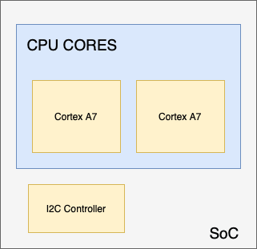

Getting started with bare metal on ARM
Starting bare-metal development on ARM is hard mostly because so much of it is unfamiliar at once. This covers two of the pieces that confused me longest — device trees and U-Boot — and points at where to go next.
Device trees
A device tree is a data structure describing a system's hardware. The operating system reads it to find out what exists and where.
On x86 this is unnecessary: hardware is discoverable, so the CPU can enumerate everything on the bus by itself. That matters on a PC, where components are swapped in and out constantly. Embedded systems rarely have removable parts, and most of their buses do not support discovery anyway — so the layout has to be written down instead.
Here is a small one:
/dts-v1/;
/ {
cpus { ... };
aliases {
sensor-controller = &i2c1;
};
soc {
i2c1: i2c@40002000 {
compatible = "vnd,soc-i2c";
label = "I2C_1";
reg = <0x40002000 0x1000>;
status = "okay";
clock-frequency = < 100000 >;
};
};
};
This describes a system-on-chip with one I2C controller. There are two nodes:
aliases, which gives sensor-controller as another name for
the controller, and soc, which holds the devices on the chip itself.
Drawn out, the SoC looks like this:

A real SoC is considerably busier, but the idea holds. Thomas Petazzoni's talk on device trees is the best comprehensive treatment I know of.
U-Boot
First, bootloader stages. A first-stage bootloader brings the board up far enough to be useful — UART, I2C, I/O — and then hands off to a second stage, which is what actually loads an application or a kernel.
The reason for two is space. The first stage has to fit in a very small amount of memory, so it is used to reach a second one that has room to work in.
U-Boot is the multistage bootloader most embedded systems use. It loads your device tree, configures the SoC from it, and boots the kernel. It has a large command set; here are the few you need to load an image over the network and jump to it:
setenv imgname img.bin
setenv loadaddr 0x42000000
# Make sure the caches are off for now
setenv bootimg 'tftp ${loadaddr} ${serverip}:${imgname}; go ${loadaddr}'
setenv sets an environment variable. imgname and
loadaddr hold the image name and the address to load it at;
bootimg holds the command that does the work.
tftp ${loadaddr} ${serverip}:${imgname} pulls the image from a server
into loadaddr — TFTP being the Trivial File Transfer Protocol, small
enough to live comfortably in a bootloader and the usual way to boot off a LAN. Then
go ${loadaddr} jumps to it.
The Das U-Boot manual has the full command reference.
Picking a board
Emulation works, but setting up real hardware is more fun and teaches you more. There are a lot of boards and the differences matter less than you would think — most run similar processors, and what varies is which peripherals are on the SoC. Pick one and start; the skills carry over.
Two I would recommend to begin with, mostly because their communities are large enough that answers are a search away: